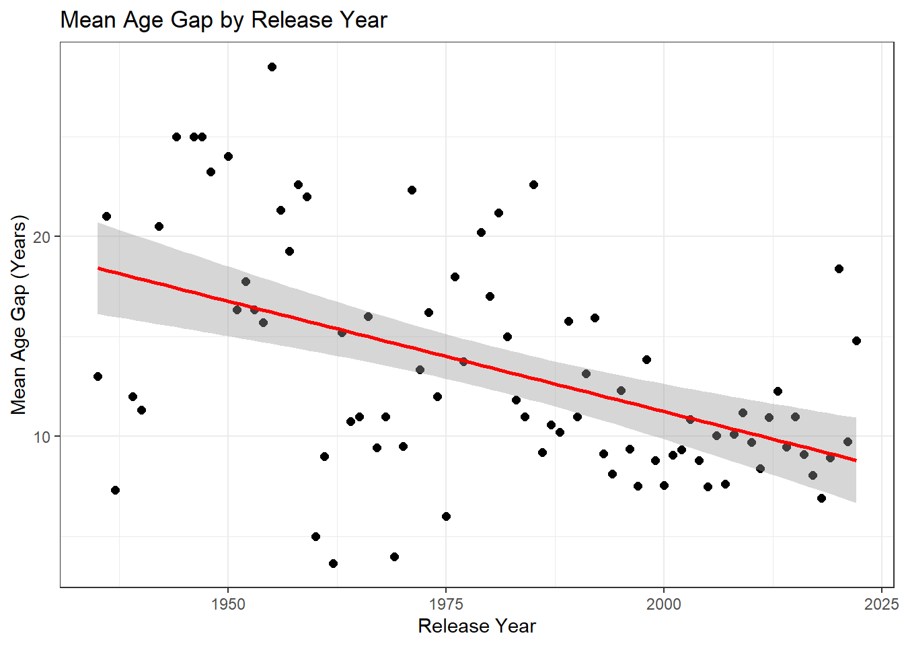

#load packages
library(tidyverse)
library(here)
library(lubridate)Tidy Tuesday Exercise
This exercise includes data from the Hollywood Age Gaps tidytuesday dataset.
Load Packages/Data
# load in data
age_gaps <- read_csv(here::here("tidytuesday_exercise", "data", "age_gaps.csv"))Rows: 1155 Columns: 13
── Column specification ────────────────────────────────────────────────────────
Delimiter: ","
chr (8): movie_name, director, actor_1_name, actor_2_name, character_1_gende...
dbl (5): release_year, age_difference, couple_number, actor_1_age, actor_2_age
ℹ Use `spec()` to retrieve the full column specification for this data.
ℹ Specify the column types or set `show_col_types = FALSE` to quiet this message.glimpse(age_gaps)Rows: 1,155
Columns: 13
$ movie_name <chr> "Harold and Maude", "Venus", "The Quiet American", …
$ release_year <dbl> 1971, 2006, 2002, 1998, 2010, 1992, 2009, 1999, 199…
$ director <chr> "Hal Ashby", "Roger Michell", "Phillip Noyce", "Joe…
$ age_difference <dbl> 52, 50, 49, 45, 43, 42, 40, 39, 38, 38, 36, 36, 35,…
$ couple_number <dbl> 1, 1, 1, 1, 1, 1, 1, 1, 1, 1, 1, 1, 1, 1, 1, 1, 1, …
$ actor_1_name <chr> "Ruth Gordon", "Peter O'Toole", "Michael Caine", "D…
$ actor_2_name <chr> "Bud Cort", "Jodie Whittaker", "Do Thi Hai Yen", "T…
$ character_1_gender <chr> "woman", "man", "man", "man", "man", "man", "man", …
$ character_2_gender <chr> "man", "woman", "woman", "woman", "man", "woman", "…
$ actor_1_birthdate <chr> "1896-10-30", "8/2/1932", "3/14/1933", "9/17/1930",…
$ actor_2_birthdate <chr> "3/29/1948", "6/3/1982", "10/1/1982", "11/8/1975", …
$ actor_1_age <dbl> 75, 74, 69, 68, 81, 59, 62, 69, 57, 77, 59, 56, 65,…
$ actor_2_age <dbl> 23, 24, 20, 23, 38, 17, 22, 30, 19, 39, 23, 20, 30,…Clean/Explore Data
This dataset is pretty clean to start, so I will jump straight into plotting to see if this reveals any interesting trends off the bat. First, I want to plot the age differences by release year.
ggplot(data = age_gaps)+
geom_point(aes(release_year, age_difference), cex=2, alpha=0.3)+
labs(x="Release Year", y="Age Difference (Years)", title = "Age Difference Between Main Characters by Release Year")+
theme_bw()This is a little cluttered, as there are many entries per year in this dataset. I want to look at the average age gap for each year and see if they are changing over time.
avg_age_gaps <- age_gaps %>%
group_by(release_year) %>%
summarize(mean_gap = mean(age_difference))
avg_age_gaps %>%
ggplot(aes(release_year, mean_gap))+
geom_point( cex=2)+
labs(x="Release Year", y="Mean Age Gap (Years)", title = "Mean Age Gap by Release Year")+
geom_smooth(method = "lm", color = "red")+
theme_bw()
It seems like the average age difference between characters 1 and 2 are decreasing over time, but I take a look at how many movies are included for each year in this dataset.
tot_by_year <- age_gaps %>%
group_by(release_year) %>%
count(age_gaps$movie_names)
tot_by_year %>%
ggplot(aes(release_year, n))+
geom_line(cex=1.5)+
labs(title = "Total Number of Movies by Release Year",
subtitle = "Age Gap Dataset", x="Release Year", y="Number of Releases")+
theme_bw()As we can see, there is quite a bit of variation in how many movies are included per release year in this dataset, with many more being included from more recent release years. This is definitely something that would have to be taken into consideration during any further analysis.
Lastly, I want to look at differences in gender for both character 1 and 2.
gender_c1 <- age_gaps %>%
count(character_1_gender)
gender_c1# A tibble: 2 × 2
character_1_gender n
<chr> <int>
1 man 941
2 woman 214gender_c2 <- age_gaps %>%
count(character_2_gender)
gender_c2# A tibble: 2 × 2
character_2_gender n
<chr> <int>
1 man 215
2 woman 940